Explore / Command deck
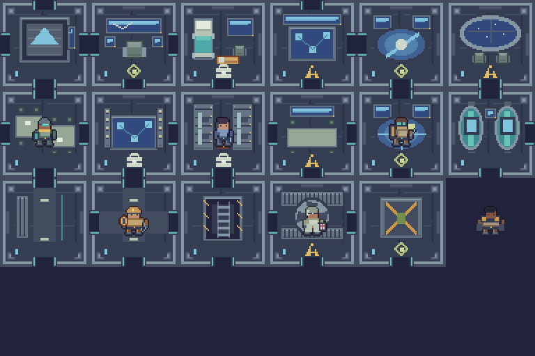
Ship log
Ines entered the Med Bay. A Salvage card was drawn.
Tiller: The next compartment is waiting.
Original asset review for #335. All five phases at native 1920×1080; room/crew art remains whole 2×. Titles, names, counters, roles, awards and the auto label are live text. These are illustrative layouts, not gameplay sessions or a connected platform lobby.
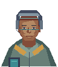
Salvage Chief
Seat 1Rigger
Seat 2
Pilot
Seat 3
Medic
Seat 4
Systems Tech
Seat 5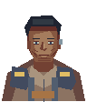
Cargo Hauler
Seat 6
Scout
Available
Signals Officer
AvailableChoose your crew on your phone. Unclaimed seats remain available.

Ines entered the Med Bay. A Salvage card was drawn.
Tiller: The next compartment is waiting.
Crew manifest error. I count one more heartbeat than the manifest allows, and one of you is not who you say you are. Ship systems are failing at several points. Repair them. If you believe you know who is lying, call a vote from the scanner. I would trust nobody. I don't.
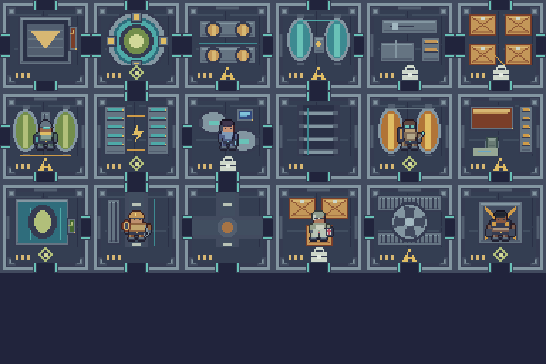
Ines entered the Med Bay. A Salvage card was drawn.
Repair points: 2 / 6. The scanner is ready.
Winners: Ines, Tobe, Sable, Anselm and Pell
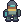
Crew
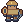
Crew
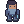
Crew
auto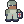
Crew
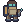
Crew
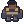
The Mimic
autoInes Okafor
Tobe Raske
Sable Quist
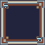

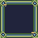
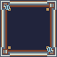
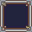

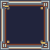